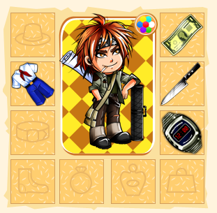

Несколько раз пробовал занять себя какой-нибудь многопользовательской онлайн-игрой. Это как чебурек у вокзала. Головой понимаешь, что пользы никакой, а скорее вред. Но вот хочется иногда чего-нибудь жирного и вредного.
Даже как-то поиграл пару дней в «Счастливую ферму» на «Одноклассниках». Но она какая-то совсем не многопользовательская была, и к тому же сценарий в ней не изобиловал ответвлениями, поэтому, засеяв поле ананасами, я его бросил.
Многопользовательских онлайн-игр миллион (ну или около того) и в начале года я у Лебедева наткнулся на рекламу очередной. Сутью игры «Понаехали тут» является противостояние коренных москвичей и приехавших в «нерезиновую» на заработки.
При регистрации вы выбираете за какую сторону будете играть и в бой. На первых уровнях зарабатывать деньги придется на самым честным и чистым способом.
Самым простым является так называемое «патрулирование». Вы патрулируете районы Москвы, за это получаете немного денег. Деньги можно потратить в «Тренажерном зале», прокачивая своего игрока, в «Торговом центре» на деньги можно купить одежду, обувь, оружие. Каждый предмет повышает навыки и умения игрока. К примеру японские часы «Монтана», 16 мелодий, дата, подсветка, секундомер и все это в одном корпусе от мирового брэнда. Школоте не понять :) — +1 к Ловкости. «Костюм Пионера» — Здоровье: +5, Выносливость: +4.

Другим вариантом несложного заработка на первых уровнях является нападение на себе подобных с целью банального грабежа. Результаты такого нападения зависят от ваших характеристик и элемента случайности. Участвуя в схватках вы получаете опыт, от которого будет зависеть ваш уровень.
На втором уровне вы можете поработать в «Шаурбургерсе». мойщиком туалетов. Но зато оплата почасовая. Делая потихоньку карьеру, вы сможете дорасти до посудомойщика.
На каждом уровне ставки и выигрыши повышаются, добавляется новый функционал и много разных фишек. Начиная с третьего, к примеру уровня становится доступным нападение на отдельные территории Москвы, покупка домашнего питомца и работа в охотничьем клубе.
На шестом уровне вы можете уже создавать свой клан и объявлять войну другим кланам.
За несколько часов вчера и сегодня я добрался до 3-го уровня. Посмотрим теперь что будет дальше…